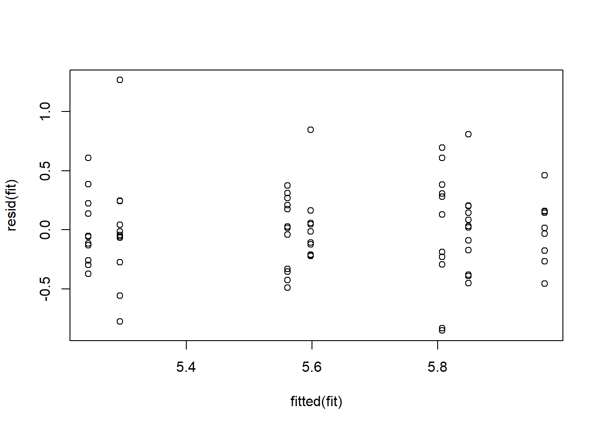
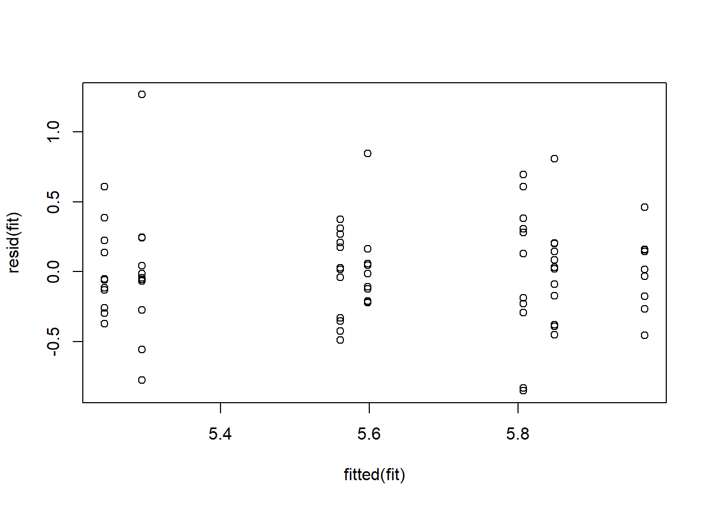
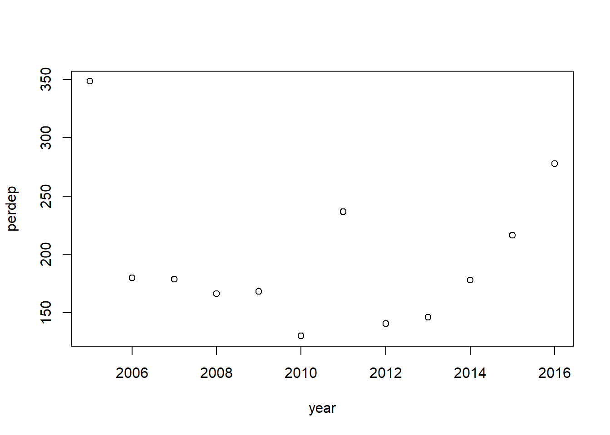
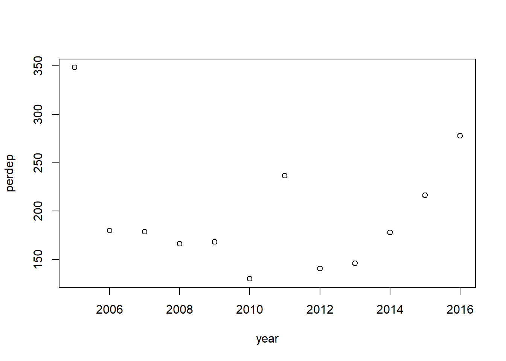

Figures
Missouri River Pallid Sturgeon Technical Team
16 February, 2018

Figure 1. Monitoring framework illustrating the 4 components.
Page Break
 Figure 2. Population simulation
Figure 2. Population simulation
Page Break
Figure 3. Movement illustration.
Page Break

Figure 4.
page break

Figure 5.
page break
Figure 6.
page break


 
 

Figure 7.
Figure 8.
Figure 9.
Figure 10. In the plot above, values with lower performance values have lower values and increasing values approach 1.
Figure ??
Effort Figures
Figure 1. Illustration of gears used since 2003 for Pallid Sturgeon Population assessment in the Missouri River. Top panel is for Lower basin (RPMA 4) and bottom panel is for Upper basin (RPMA 2).